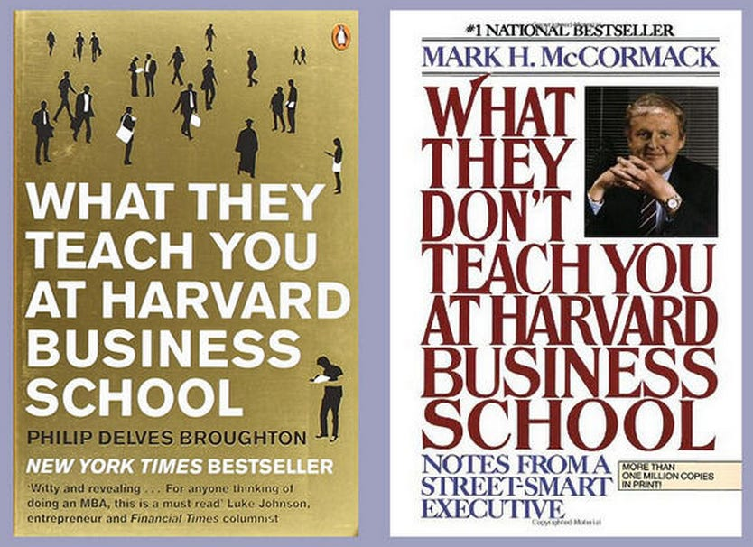

Melee Lessons Review
Table of Contents
Melee Lesson Resources for Fox Players + Thoughts on Learning in Melee
Over the last few months I've been consuming a lot of melee lesson content, specifically aimed at fox players. I like to think I have experienced a fair bit of improvement in the last few months1, and so I would like to provide my perspective on what the different coaches are good at communicating, in order to inform which teachers would be right for you.
Consuming all of this information has also led me to do a good amount of thinking about teaching in general, as well as the broader learning culture in Melee. As such, this review is broadly split into two parts: my thoughts on specific teachers, and my thoughts on teaching.
Both of these are going to be pretty wordy, drawn out rants, so if you just want a tl;dr then consider the following:
- Fiction is good at teaching students to build a framework where they make meaningful decisions to beat their opponent's decisions, and understand their opponent's goals
- iBDW is good at providing high-value changes that are easy to implement
- Druggedfox is good at providing a framework for improvement in general, where in every situation all errors are either non-reactive play, or a misappraised situation leading to a poor decision (and all his lessons are about fixing these two problems)
All three of these teachers are good for some students and bad for others, and knowing what kind of instruction you are hoping to achieve is as important to the result as good instruction is.
Specific Teacher Reviews
Fiction
Fiction:
— Eryk (@Ambisinister_) March 5, 2021
“I think you would be better at the game if you remembered your opponent is trying to outwit you. If you remember this then your gameplan will have to become coherent around it”
Fiction's lessons are freely available on his youtube channel, and a session of his costs $45. I did a lesson with him which you can find here. Among the three players I will be discussing I think he is by far the best at teaching, and his approach to the lessons is pretty well suited for improving quickly. The two big things I want to highlight here are the concepts of Inferential Distance and Red-teaming which are two concepts I think stand out as things Fiction does especially well in his lessons.
Inferential Distance
The idea of Inferential Distance2 is that it's a way to describe how many "steps away" you are from understanding something. I think a good example to demonstrate what exactly I mean here is to just point to 3Blue1Brown who has an almost unnatural ability to do this for math concepts: if you want to understand how to solve a problem on the putnam exam, which is a very difficult mathematics competition, you might start by assuming the reader knows some basic linear algebra and then start your explanation from there. If your audience doesn't know linear algebra, they will be completely lost from step 1, and no matter how beautiful your explanation is they will not understand. If you start with points, lines, and coin flips, you could probably explain the solution to this problem to any high schooler.
Knowing how many things need to be explained before something is understood is called inferential distance, and not thinking about it at all is why communication in STEM is so, so horrible in the professional world3.
Fiction, among the melee teachers, has what I consider to be the strongest ability to figure out the skill level of his students as fast as possible, and then use this information in order to pinpoint how best to explain the concept that he thinks is the biggest flaw(s) in the student's play. Something that you'll hear pretty often if you watch enough Fiction lessons is something to the effect of "this isn't the whole matchup, but this will work on pretty much everyone you play".
Some criticism I see of Fiction's lessons are, in my view, reflections of him adjusting his teaching style around the skill level of his student, and he will occasionally provide a somewhat oversimplified description of a situation to give the student a starting point. The idea is that the simple description will get them 80% of the way there4, and the time spent giving additional nuance is better spent giving more structure in other places instead.
My favorite examples of this are Fiction's two lessons with Zuppy and Veronica on the Fox vs Ice Climbers matchup. The former laid out a fairly detailed, overall gameplan against the Ice Climbers. In the latter, the student seemed to have beautifully implemented all of Fiction's advice from the first lesson and still lost, which made for a very instructional lesson on the "next level" of that matchup, with some explanation on when the lead climber is your opponent and when you should go after Nana. Rather than aiming to make you as good as possible at the matchup, it's a lot more oriented to make this matchup not-your-worst-matchup as fast as possible so you can reprioritize to something else.
Red Teaming
I think more than a lot of the other teachers, Fiction is enamored with the idea that you change what you are doing based on what your opponent thinks in response to your actions. Whereas the other teachers will typically focus on what to do in response to things, Fiction will focus more directly on what the opponent wants to accomplish with their moves, and how those goals are in conflict with yours.
To be a bit more concrete, Fiction will regularly mention things in the context of "if you've ever played this matchup from the other side", and there's a lot less of a detached focus on "beating X thing" without context of why X thing was done in the first place. This tends to make his lessons pretty memorable, since you get some pandolfinisms which are easy to remember (e.g. "Falco is a lot like peach, he cannot run very fast so he has to defend himself with moves").
The other teachers obviously still care about what the opponent's goal is, but their approach on teaching is vaguely more what do I do focused, rather than Fiction's slightly more what do they want approach. I don't really know how to describe this nuance any better than this, other than that I typically come away from fiction lessons thinking more about the other character rather than my own.
iBDW
iBDW:
— Eryk (@Ambisinister_) March 5, 2021
“Against someone like this you don’t even need to think at all, you can just turn your brain off. X thing beats all of this, so you only need to do X unless they represent Y, because Y beats X, so I want you to go practice X”
iBDW's lessons are locked behind a tier 3 sub, which is $25, which also get you a lesson. In this sense, it's a sort of mixed value; the lesson is very inexpensive, but the vods are quite a bit more pricey in comparison to druggedfox ($5) or fiction ($0). I did a lesson with him which can be found here.
iBDW compared to Fiction is a lot more directly oriented on easy-to-implement, high value changes compared to a more framework-like understanding. Something he says in a good number of these lessons is "if he does X, you just turn your brain off" which is certainly a phrase you would pretty much never, ever hear fiction or druggedfox say. iBDW is in comparison much more directly concerned with arming you with something good, and preventing you from distracting yourself with things you don't have to worry about yet. I think he's a nice supplement for either druggedfox or fiction.
A fun comparison point between fiction and iBDW comes with fox vs sheik. In the lessons I've seen fiction describe fox vs sheik, he usually spends virtually the entire time talking about the bair wall sheik does in that matchup, sort of waving off the rest of the matchup with "you can just nair at different timings vs everything else". In comparison, iBDW spends virtually the entire lesson talking about "clown nair" because of how it beats everything except for bair, and depending on the level of his student will sometimes deliberately ignore the bair wall because it only manifests at the higher levels in this matchup. The two of these approaches together have made me feel pretty comfortable vs sheik, and I saw some pretty substantial improvements in the matchup after implementing stuff from both sources.

In general, I think iBDW has a more scattered teaching style; he's more willing to jump around between analyzing sets his students provide and pro sets, which are usually improvised (e.g. going to youtube and typing something like "fox vs falcon" and then scrolling through until he finds a set which was memorable). This has pros and cons to it; it's sometimes a little difficult to follow, but if you land on a good, important concept it's often higher value than just going over the same situations multiple times (which iBDW is not very fond of). For this reason I think he pairs very well with students who already are good at providing structure for themselves (Hank does this especially well, and shows up to most of his lessons with gfycats of situations he wants to talk about, and as a result those lessons are always very very good).
Druggedfox
Druggedfox:
— Eryk (@Ambisinister_) March 5, 2021
*watches 5 seconds*
“Okay, so, in my opinion the first thing to note is that all of your decisions are bad. Did you have anything in mind when you made these decisions? If you were playing this reactively you would have made none of these bad decisions”
Druggedfox lessons are very high value for money; it's just $5 and you get access to something like 300 hours of lesson content he's done since 2017. Druggedfox famously became good by theorycrafting thousands of situations until it was literally impossible for him to be a bad player, and it shows in his teaching style - it's a firehose. Very often druggedfox will only get ten seconds into a vod one of his students sends him, because he can talk about the situations in those ten seconds for a full hour. I did not have a lesson with druggedfox (as his patreon is very full) but he does have this lesson public which is a pretty solid representation.
In my view, Druggedfox's firehose approach is both good and bad. The lessons aren't really organized into any sort of "This is a gameplan lesson" and "This lesson goes over situations" kind of way (although he's making some steps with that recently via his "How To" designation), so in my view it's a lot more directly geared towards higher level players who understand all of their matchups already – there's far more information on most matchups in these videos than you could ever possibly want. But it's a bit of a double edged sword, because druggedfox's teaching style is so much more oriented around explaining why his student did something bad, rather than instructing them on doing something good.
Druggedfox also minimally changes the content of his lessons based on the skill level of the person he is teaching in any given lesson, a point he often brings up himself. The reason for this is pretty straightforward - Druggedfox largely teaches individual situations, general matchup structure, and an overarching philosophy that you should react to literally everything that happens at all points in the game.
Just React
Anybody who has spent even a vague amount of time in a social circle even mildly aware of who Druggedfox is probably knows that he loves telling players to "look at the screen". This short phrase encompasses virtually all of the Druggedfox school of thought for Melee. It's very common for Melee players to use things mindlessly that they believe are good, to not know what they are doing wrong, and to get stuck. For Druggedfox acolytes, there are only two things you have to do to never stop improving - perceive every single interaction as it happens, and understand every single interaction.
As a goal to aspire to, it's certainly very appealing. The platonic ideal of a high level Melee match is that both players jockey for favorable, unreactable mixups, and every single mixup played is a genuine and meaningful outplay.
This, if you go and try it, takes a lot of focus to actually do for every moment of a complete game. But you start doing it, and you notice that a lot of times your opponent does things which you can just react to and punish for free, and that every so often you will randomly, inexplicably do something which your opponent can just react to and punish for free. There is, in fact, so much of this usually left on the table at most levels of the game, where Druggedfox and his school of thought care about virtually nothing else. If you can capitalize on all of these things, and your punish game is decently strong, you are already among the best players on Earth.
Chess Puzzles vs Chess Games
It is worth noting that improved tournament performance as fast as possible is not really the aim of the druggedfox approach, which makes sense when you remember Druggedfox has never really been a player who focused much on performing well in tournament5. The aim of the druggedfox method is to turn you into a player who knows what to do, correctly, as often and quickly as possible, at any cost. Whereas other teachers will make concessions in order to make things easy to implement at first, students of Druggedfox are typically cast into the abyss until they either perish or emerge being able to react to things.
The way I've heard it described by some players is that while some coaches teach you to play chess, Druggedfox teaches you to solve chess puzzles. In a lot of ways, the way Druggedfox approaches teaching melee reminds me a lot of Michael de la Maza's book Rapid Chess Improvement, which I remember being a pretty big influence for me before I gave up playing chess in tournaments6. The thesis of this book is that virtually every game below expert-level is decided by short combinations, from three to six moves long (either missing these or finding them). So, if you are below this level, you should do literally nothing except for solve chess puzzles thousands of times, over and over, for hours every day until you virtually never miss these combinations in a game ever again.
The comparison to De la Maza's book isn't perfect (De la Maza famously didn't know anything about openings or long-term planning, he would just try to remain active and then wait for a tactical combination to randomly emerge), but it's fairly similar in my view. Since the vast majority of matches are decided by one player not paying attention, the most important skill to develop is learning to pay attention - everything else follows after.
Thoughts on Teaching, Learning, and Melee Culture
The Meta is Worse is Better
In software engineering, there is this concept known as Worse is Better, which refers to a design philosophy which claims that software quality doesn't scale 1-to-1 with additional functionality. That is to say, software which is objectively "worse" might be preferable for the user if it's limitations make it easier to use.
The originator of this idea, Richard Gabriel, identified two approaches to making software – "New Jersey Style", which embodies "Worse is Better"; and "the MIT Approach", which embodies "the right way". These two approaches, in turn, differ along four axes.
Simplicity
Both New Jersey style and MIT style value simplicity, but the difference is that New Jersey style cares more about the simplicity of the implementation, compared to MIT style caring more about the simplicity of the interface.
Correctness
Both New Jersey style and MIT style value correctness. New Jersey style is willing to concede correctness if it's more simple to do so, whereas MIT style does not tolerate incorrectness.
Consistency
Both New Jersey style and MIT style value consistency. In MIT style, this is as important as correctness, and a design is allowed to become more complicated if it makes everything more consistent. In New Jersey style, it is considered better to ignore less common circumstances rather than introduce complexity.
Completeness
Both New Jersey style and MIT style value completeness. MIT style attempts to cover as many situations as can reasonably be implemented, whereas New Jersey style is willing to sacrifice completeness if doing so preserves simplicity.
Okay Eryk Where Are You Going With This
I find the idea of "worse is better" to be a useful analogy to how players teach and learn Melee. In particular, I think the different teachers I discuss in this essay have different priorities for their students along this NJ-MIT axis; There is a dramatically different focus among them for what I refer to as "getting a weapon into your hands".
Very broadly speaking, I think that teachers like iBDW are more oriented towards getting their students to win games, compared to teachers like Druggedfox being more oriented towards getting their students to make good decisions. Students of both of these teachers often have a sort of low-key derision towards the other, and I think a lot of it can be explained by framing it as this "worse is better" discussion.
These two goals seem like they should be entirely aligned, but the way it ends up manifesting in their students is that the former tend to wield tools they don't fully understand (sometimes using them in bad spots), and the latter understand more than they are really capable of wielding at their current level (which makes them frustrated).
Personally speaking, I found the greatest improvements in the shortest time came from adjustments suggested in lessons from fiction or iBDW, even if the frameworks provided by those two were sometimes not entirely explained to me. Likewise, I found druggedfox to be the best choice when there were specific things I did not understand, since he tends to dive very deep compared to the other two about particular nuances to a situation.
I think the teacher you select should be based around the type of advice you are hoping to receive; if you want a lot of adjustments which sound like "braindead idiot nair is very strong vs sheik" then the former two would be a better teacher, but if you want to know why some nairs are bad and some are good then Druggedfox typically provides the additional nuance at the cost of being less targeted at immediately winning you as many games as quickly as possible.
It boils down to a difference of "know what to do" versus "know what I am doing" which in my experience as a competitor typically jump out at me as distinct problems when I need one or the other.
Making Learning Whole
In the original essay where "Worse is Better" was coined, Gabriel argued that developing with this approach led to a few things
- Higher likelihood of being successfully adopted
- Much less time and effort to implement
- Much easier to adapt to new situations
Which, as I mentioned before, are almost all practical considerations rather than knowledge or efficacy considerations. Given unlimited time and no deadline, it would clearly be preferable to have and use the software which has more functionality. That is to say, if you have a big structure already set in place, then making small adjustments for specific situations is easy, but if you don't have a big structure already in place, than piecing one together from a bunch of specific situations is very, very difficult.
In the book Making Learning Whole, written by Harvard math professor David Perkins, there are seven principles which are laid out as effective ways to make your students the most excited about what they are being taught.
- Play the whole game
- Make the game worth playing
- Work on the hard parts
- Play out of town
- Play the hidden game
- Learn from the team
- Learn the game of learning
I think using the words "play" and "game" so frequently here is a useful thing to keep in mind when you consider that this book was originally written to explain teaching mathematics, but since we are literally learning a game it translates quite nicely.
The first point is the most important here - playing the whole game. In the book, Perkins argues that many teachers approach teaching in a way that would seem incomprehensible if you were teaching children to play baseball: a style of teaching which would require the student to pass a written exam about the obscure rules of baseball before ever getting to hold a bat and swing at pitches.
Most Melee players both lack the big picture and enjoy playing the game, so typically speaking the most motivating thing for a student is something they can easily understand which will improve their play and use until they begin running into spots they do not understand.
The learner learns what the learner wants to learn
The Cult of "Bad" Players
I think melee players, myself included, would probably do well to be just a little bit nicer to themselves and others, at least as far as skill level at the game goes.
I think it's worth pointing out what types of things I typically see students of these teachers be frustrated with, specifically because human beings are human beings and we have a limited capacity for stress and frustration. Melee is a very difficult game with a very sparse reward signal, so it is sometimes very difficult to determine if you are actually improving in a meaningful capacity.
Teaching Yourself vs Teaching Others
As far as games go, Melee has a very strong self-teaching culture, which leads to some funny quirks about the way largely self-taught elite-level players teach in their lessons. Reaching such a high level in such a competitive field requires literally thousands of hours of practice, most of which is laser focused on the worst-performing parts of yourself. Most fields do not have people this high-level offering lessons from 25-50 dollars.
I think an almost ubiquitous thing about melee teachers is an approach which bears a lot of similarity to how the teacher teaches themselves (which is understandable, since that approach let them reach such a high level). Most players, when looking at their own games, make a list of things they did that they thought were bad, and things they could do to change those things, and then go to work trying to implement those changes. It is a very normal, very healthy way to analyze your own videos, and the ability to identify things which need to be improved is the way you can continue improving over and over.
However, if you watch a video of a lower level player, there's a strong temptation to look at everything, explain why everything they did was bad, tell them to change everything, and then watch them drown in the despair of how everything they are doing is useless. The reason this doesn't perfectly translate from self-teaching to other-teaching becomes clearer when you think of it like a Rumsfeld speech.
- Things you do, which you understand (known knowns)
- Things you do, which you don't understand (known unknowns)
- Things you don't do, which you understand (known unknowns)
- Things you don't do, which you do not understand (unknown unknowns)
The purpose of self-analysis, generally speaking, is to A: take things from 2 and move them to either 1 (good) or 3 (bad), or B: take good things from 3 and move them to 1. You either develop understanding, or you implement stuff you don't do yet. The more understanding you develop, the more stuff naturally trickles in from bucket 4 into bucket 3.
The good thing about seeking out a strong player as a teacher is that they understand more than you, so they have better insight onto which things you should learn and implement. Maybe you've been struggling with how to beat a specific thing falco does, and none of the ideas in your bucket #3 seem like they can deal with it – the solution lives somewhere in bucket #4. A strong player with a much larger pool of things-understood might see it and immediately recognize that you should add X, or remove Y.
The bad thing about seeking out a strong player is that, sometimes, they understand everything in your bucket #2. And sometimes all of these things are so distracting that the teacher spends the whole time trying to address these things that they completely ignore the biggest advantage of getting a strong teacher in the first place - understanding things which are high-value that you do not understand.
This has mixed value for high level players, for whom this type of optimization is very very important, but it's often a mistake for players who don't know what they are doing in the first place; the teacher thinks they're giving the student a lot of stuff to work on, but the student comes away with a booster shot of disgust in their own play, alongside a generally-unaware sense of what order would be most effective to work on these things.
In other words, they leave realizing they are much worse than they thought, rather than being really excited to work on things. As a result, their improvement hinges more upon whether they can successfully navigate the emotional turmoil, which will inevitably lead to higher attrition rate.
Self-Discrepancy Theory
In particular, I think that the melee community's predilection for calling everyone and every thing "bad" has some very specific, very damaging psychological effects which nobody ever acknowledges within our scene, specifically because everybody has this weird obsession with treating ourselves like emotionless machines.
In psychology there's a concept called self-discrepancy theory which proposes that individuals model their internal self-image into three selves: Actual self, ideal self, and ought self. These three self-concepts usually differ in some capacity, and the way they differ typically gives rise to the types of negative emotional experiences that people experience on a day-to-day basis.
There are two discrepancies that I want to highlight: distance between your actual self and your ideal self, and distance between your actual self and your "ought" self.
Actual vs Ideal
Generally speaking, the discrepancy between the actual self and the idealized self are associated with low self-esteem, frustration, disappointment, and similar emotions associated with unmet goals.
If you're a competitor at anything, these emotions should be pretty familiar to you, and I would consider them fairly healthy feelings which would motivate you to improve at your lacking attributes, provided your ideal self is not wildly far away from where you are currently (in which case some realistic goal-setting would probably be in order). Obviously if you are going into something with the desire to improve at it, there is going to be some inevitable gap between these two selves, and managing the negative feelings of unmet goals with the complacency which comes from aiming too low is an important balance to keep.
Actual vs Ought
However, a discrepancy between the actual self and a person's view of the expectations of what they ought to be by now is quite a bit more damaging from a competitor perspective: this usually happens when people experience a lot of highly negative outcomes, and usually leads to increased feelings of guilt, self-contempt, worthlessness, anxiety, and self-criticism. Note that none of these are "useful" negative emotions for our purposes - the desire to improve your weaknesses and avoid becoming complacent are all more directly involved with the actual-ideal discrepancy. Telling yourself that you are garbage doesn't magically make you better, it just makes you feel bad. You are allowed to feel good about yourself right now, provided that you recognize that the idealized player you could become is much better than you currently are.
How this has manifested for me, after consuming all of this lesson content, is that in some matchups I have managed to build a framework which allowed me to feel like I could win games even if I was not playing amazing, at least against players who weren't outrageously strong.
I’ve been practicing a lot of melee recently and this whole time I thought improving would feel like “I am going to play so well that I will destroy everybody” but I’m finding it feels more like “my plan is so strong that I won even though I played horrible”
— Eryk (@Ambisinister_) March 10, 2021
I find a lot of players lose the forest for the trees here - playing badly is just an ill-defined way to describe playing below what you perceive as your actual skill level (which is probably above average, for your skill level, since average is usually perceived as below-average for ability judgments). If you win decisively, barely win, or barely lose, all of those are pretty good outcomes even if playing badly feels bad. If you lose badly, then who is to say if you would have won playing well anyways?
I think the reason I'm so insistent on getting a weapon into the hands of a student is because an increased sense of understanding without a developed ability to turn that understanding into positive outcomes (in this case, tournament victories) makes students feel like they are better players than they really are, just that they are always playing badly7. In reality, they might just be playing the same, but their opinion of their own play has fallen, and now they can more "correctly" describe their play as "playing badly". As such, players with large negative discrepancies between these two typically feel like they "should be" beating all sorts of players, because they see and comprehend all sorts of terrible mistakes those players are making, but aren't yet able to convert those mistakes to advantages for themselves.
Conclusion
I am of the belief that teaching and learning is a two-player game. I think American culture, fueled by self-identified "super learners" who make a living taking credit for the results of expensive, world-class instruction, typically tilt the balance in favor of praising the learner for the outcome regardless of how good or bad of a student they really were.
Being a good teacher means that you are able to do at least one of two things: teach a lot of students very well, or teach a specific kind of student to an extreme level. In places outside the western hemisphere, people with these abilities are superheroes, and they command respect.
Being a good student, on the other hand, ultimately boils down to being good at one thing: extracting value from your teacher. This sole skill is the reason why melee players oftentimes rudely react when you ask them a vague question about improving like "do you have advice". The secret isn't that the person asking must be bad at learning - it's that teaching well is extremely hard, and most people who don't spend a lot of time teaching do not know how to help you unless you hold their hand and explain to them what kind of value you can provide them.
When evaluating a question like "is X a good teacher", it is important to remember that this is, in many ways, a two player question; it's fairly similar to asking something like "is X a good therapist". Do they have a clear communication style which will let them instruct lots of players? Do they have a body of knowledge which is useful for you, specifically? Is their communication style compatible with yours? Are you going to feel good or bad after your lessons, and are you prepared to deal with that? What is your definition of "value"? How are you planning on extracting this from your teacher? All of these are fairly unanswerable unless you can answer it yourself, which is the unfortunate non-answer I arrived at.
We are fortunate to exist in a community where strong players will offer coaching at reasonable prices, and I am hoping that reviews like this are helpful in establishing the relative strengths and weaknesses of different people offering coaching services - I think this information is really important, and it helps everybody in the long run since incompatible student-teacher pairs have a reduced likelihood of wasting their time on each other.
As was mentioned earlier - the learner learns what the learner wants to learn. A good teacher will either help them learn it, or make them want the right thing.
Footnotes:
An opinion I plan on not qualifying with links to brackets because everyone has toxic opinions about which sets are real and which aren't; the important thing is just how I feel about it, honestly.
There's good and bad things about the rationalist community, but this concept was one I got from reading Yudkowsky.
I once did an interview at work for an internship position, and this college student interviewing asked me "if I want to be a good researcher, what sorts of classes should I take?" I answered "writing" and he looked at me like I had three heads.
Of course refer to the Pareto principle
This isn't shade, for what it's worth; Druggedfox was strong with many characters throughout his tournament career and lots of people wondered why he would not just move around characters to counterpick rather than stick it out with whatever character he was playing at the time. My understanding is that his answer to this was just that he was interested in playing a specific character, and performing well with them.
I still grind out chess puzzles from time to time but I had enough bad experiences talking to chess players to put me off the game.
I still think this is really rude to your opponent, also. I'm getting a little tired of listening to explanations about why I am worse than my opponent after defeating them.